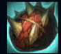
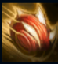
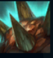
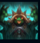
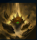

Rammus
| Rammus The Armordillo | |
|---|---|
| Release date | 10.07.2009 |
| Class | VAnguard |
| Positions | Jungle |
| Resource | Mana |
| Range type | Melee |
| Adaptive type | Melee |
| Base statistics | |||
| Health | 540 – 1987 | Mana | 315 – 1165 |
| Health regen. | 564 – 2179 |
Mana regen. | 7.84 – 16.34 |
| Armor | 36 – 98.3 | Attack damage | 62 – 121.5 |
| Magic resist. | 32 – 53.25 | Crit. damage | 175% |
| Move. speed | 335 | Attack range | 125 |
Venerată sau ignorată, creatura misterioasă ce poartă numele de Rammus este o enigmă pentru toată lumea. Sub protecția carapacei sale țepoase, Rammus inspiră povești care mai de care mai ciudate despre originea sa – de la o simplă bestie transformată cu ajutorul magiei, până la rangul de oracol sacru sau chiar de semizeu. Oricare ar fi adevărul, Rammus cutreieră solitar deșertul din Shurima pentru a-și duce la capăt misiunea. |  |
CARAPACE CU ȚEPI Atacurile de bază ale lui Rammus provoacă daune magice bonus în funcție de armura pe care a acumulat-o. |
||
|---|---|---|---|---|
 |
MINGEA PUTERII Rammus se năpustește asupra inamicilor sub forma unei mingi, provocând daune și încetinind țintele afectate de impact. | |||
 |
GHEM DEFENSIV Rammus adoptă o formă defensivă care îl încetinește, dar îi amplifică atât armura și rezistența la magie, precum și daunele provocate de ''Carapacea cu țepi''. În plus, dacă e lovit de un atac de bază în acest timp, atacatorul suferă și el o parte din daune. |
|||
|  |
PROVOCARE FRENETICĂ Rammus provoacă un campion inamic sau un monstru să-l atace. În plus, primește pentru scurt timp un bonus la viteza de atac, ce poate fi prelungit activând o altă abilitate. |
|||
 |
TREPIDATII Rammus produce unde seismice distrugătoare, care le provoacă daune inamicilor aflați în apropiere și îi încetinesc. Împotriva turnurilor, trepidațiile provoacă daune duble. |